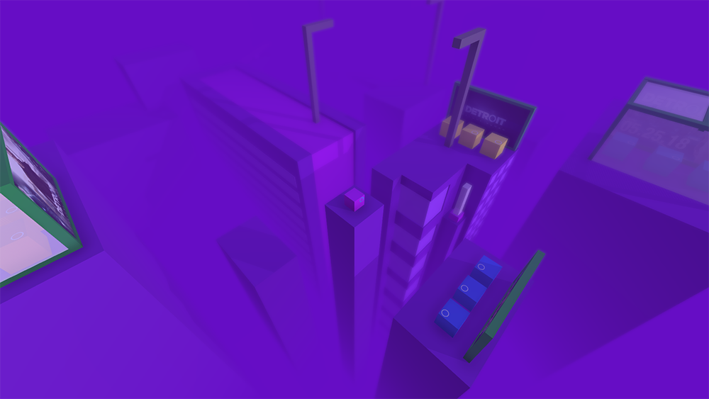
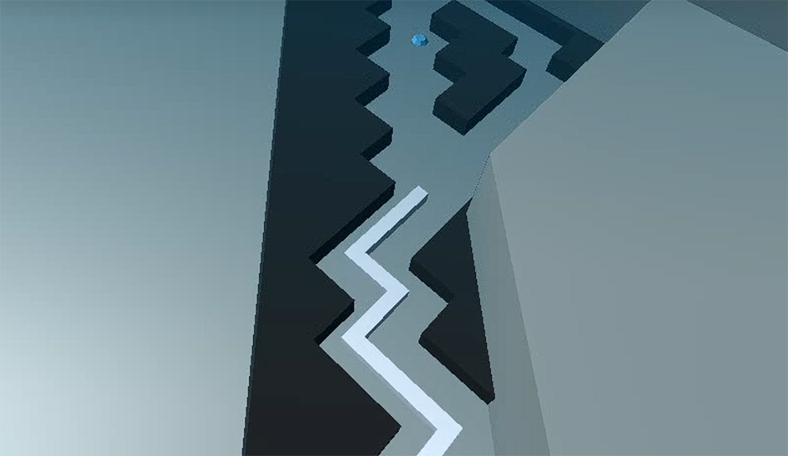

个人作品¶
此页面收录了我从2018年至今全部完成和未完成的饭制关卡作品
已完成作品¶
2018年¶
海洋¶
 使用UE4制作，是真正意义上的第一个完整作品
使用UE4制作，是真正意义上的第一个完整作品
发表日期：2018年5月4日
视频链接：B站
乡野¶
 使用UE4制作
使用UE4制作
发表日期：2018年5月26日
视频链接：B站
云¶
 使用UE4制作，个人成名作
使用UE4制作，个人成名作
发表日期：2018年6月18日
视频链接：B站
自然¶
 从此作品开始，制作引擎更换为Unity
从此作品开始，制作引擎更换为Unity
发表日期：2018年7月4日（旧）、2018年8月11日（新）
视频链接（旧）：B站
视频链接（新）：B站
钢琴¶
 发表日期：2018年7月10日
发表日期：2018年7月10日
视频链接：B站
中华¶
 发表日期：2018年8月27日
发表日期：2018年8月27日
视频链接：B站
环境¶

最美丽的一集
发表日期：2018年10月13日
视频链接：B站
底特律—序始¶
 发表日期：2018年12月16日
视频链接：B站
2019年¶
The Enddays¶
 发表日期：2019年1月30日
发表日期：2019年1月30日
视频链接：B站
矩阵¶
 发表日期：2019年3月10日
发表日期：2019年3月10日
视频链接：B站
自然 [重制]¶
 发表日期：2019年3月24日
发表日期：2019年3月24日
视频链接：B站
乡野 [重制]¶
 发表日期：2019年7月18日
发表日期：2019年7月18日
视频链接：B站
深空¶
 发表日期：2019年8月5日
发表日期：2019年8月5日
视频链接：B站
2020年¶
序言（开端）¶
发表日期：2020年2月4日
视频链接：B站
贝多芬病毒¶
是对qqxqqx的关卡贝多芬病毒的重制
发表日期：2020年2月4日
视频链接：B站
橄榄球¶
 是对qqxqqx的关卡橄榄球的重制
是对qqxqqx的关卡橄榄球的重制
发表日期：2020年2月13日
视频链接：B站
海洋（MaxLine）¶
是和qqxqqx合作制作的关卡，开头至50%为我制作
发表日期：2020年4月6日
视频链接：B站
伊始¶
 发表日期：2020年6月2日
发表日期：2020年6月2日
视频链接：B站
启示录¶
 是和qqxqqx合作制作的关卡，开头至40%、80%至100%为我制作
是和qqxqqx合作制作的关卡，开头至40%、80%至100%为我制作
此关卡在2019年6月就已有概念
 ^当时为此关卡制作的概念图
^当时为此关卡制作的概念图
发表日期：2020年6月15日
视频链接：B站
海滩¶
 是对qqxqqx的关卡序言Remix的重制
是对qqxqqx的关卡序言Remix的重制
发表日期：2020年8月2日
视频链接：B站
雨¶
 发表日期：2020年8月2日
发表日期：2020年8月2日
视频链接：B站
滑稽¶
是对Lusaslan的关卡滑稽的重制
发表日期：2020年10月4日
视频链接：B站
2021年¶
周年庆¶
MaxLine一周年纪念关卡，是和qqxqqx、lyckay和GP0108合作制作的关卡，70%至100%为我制作
发表日期：2021年2月4日
视频链接：B站
地球 [复刻]¶

发表日期：2021年2月17日
视频链接：B站
In the End¶
是对raw_chicken的关卡In the End的重制和续作
发表日期：2021年2月24日
视频链接：B站
水晶 [复刻]¶
 发表日期：2021年6月11日
发表日期：2021年6月11日
视频链接：B站
数学¶
 是对Li Ga Yb的关卡数学的重制
是对Li Ga Yb的关卡数学的重制
发表日期：2021年8月10日
视频链接：B站
2022年¶
探索¶
 是对Max余焰的关卡探索的重制
是对Max余焰的关卡探索的重制
发表日期：2022年8月6日
视频链接：B站
2023年¶
空间¶
此关卡于2024年2月被《跳舞的线》收录
发表日期：2023年6月15日
视频链接：B站
2025年¶
迷度 [新]¶
是对CIAD233的关卡迷度的重制
发表日期：2025年4月20日
视频链接：B站
年份不可查作品¶
风暴 [完整版]¶
 是和叶枫合作制作的关卡
视频链接：B站
序幕¶
视频链接：B站
草原¶
 是和Max余焰、Max智焰合作制作的关卡
是和Max余焰、Max智焰合作制作的关卡
视频链接：B站
序幕（DLPCPE 2021）¶
 视频链接：B站
视频链接：B站
未完成作品¶
小镇¶
使用UE4制作
关卡图片缺失
制作时间：2018年
风暴¶
TTF饭制，使用UE4制作
关卡图片缺失
制作时间：2018年
海盗¶
使用UE4制作
关卡图片缺失
制作时间：2018年
风暴 Dance Remix¶
使用UE4制作，开头至30%为我制作，后续交由雪能花制作
关卡图片缺失
制作时间：2018年
The Ignite¶
因工程损坏而放弃制作，关卡原名称已不可查
关卡图片缺失
制作时间：2018年
舞池¶
制作时间：2018年
视频链接：B站
霓虹¶
关卡图片缺失
制作时间：2018年
Darkside¶
关卡图片缺失
制作时间：2018年
The Faded Original Full¶
关卡图片缺失
制作时间：2018年
雪之梦¶
制作时间：2018年
视频链接：B站
宇宙魔方¶
制作时间：2018年
视频链接：B站
战争¶
 制作时间：2019年
制作时间：2019年
视频链接：B站
底特律—序始 [重制]¶
制作时间：2019年
视频链接：B站
互联网¶
关卡图片缺失
制作时间：2019年
幻想曲¶
MaxLine的早期关卡，音乐由羽焰辰星制作，是Marble Machine的Remix
关卡图片缺失
制作时间：2020年
命运¶
开头至20%为我制作，后续交由Hatcat制作
制作时间：2022年
视频链接：B站
无人区 [重制]¶
是对LAM的关卡无人区的重制
制作时间：2022年